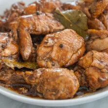
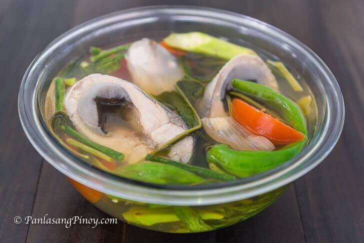
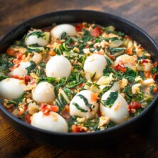

A classic Filipino dish that can be sweet, sour, or salty. Depending on your taste.

Prep Time:
10 mins
Cook Time:
50 mins
Marinate Time:
1 hr/60 mins
Total Time:
2 hrs/120 mins
Ingredients
1 kg chicken cut into serving pieces
3 pieces dried bay leaves
60 ml soy sauce
67 ml white vinegar
10 cloves garlic crushed
355 ml water
60 ml cooking oil
4 g sugar
2 g whole peppercorn
Salt to taste
Equipment
1 Mortar and Pestle for crushing the garlic to release more flavor
1 Heavy-bottomed Pot holds heat evenly for steady simmering.
Instructions
Crush the garlic using a mortar and pestle. 10 cloves garlic
Combine the chicken, soy sauce, and crushed garlic in a large bowl. Mix well and marinate for at least 1 hour. The longer the chicken marinates, the better the flavor. 1 kg chicken, 60 ml soy sauce, 10 cloves garlic
Remove the chicken pieces from the marinade using kitchen tongs. Scoop out the crushed garlic with a slotted spoon. Reserve the garlic and marinade separately. 1 kg chicken, 60 ml soy sauce, 10 cloves garlic
Heat a cooking pot and pour in 3 tablespoons of cooking oil. 60 ml cooking oil
Once the oil gets hot, pan-fry the marinated chicken for 2 minutes per side. 1 kg chicken
Remove the chicken from the pot and set it aside. 1 kg chicken
Pour the remaining cooking oil into the same pot. 60 ml cooking oil
Add the garlic from the marinade and sauté until it starts to brown. 10 cloves garlic
Return the chicken to the pot. 1 kg chicke
Add the remaining marinade, whole peppercorns, and dried bay leaves. 3 pieces dried bay leaves, 60 ml soy sauce, 2 g whole peppercorn
Pour in the water and let it boil. 355 ml water
Cover the pot and simmer for 30 minutes, or until the chicken becomes tender. 1 kg chicken
Pour in the vinegar. Let it boil for 1 minute without stirring. Stir, then continue simmering uncovered for 15 minutes. 67 ml white vinegar
Add the sugar and salt as needed. Stir, then turn the heat off. 4 g sugar, Salt
Transfer to a serving plate. Serve hot with rice. Share and enjoy!
Delicious fish simmered in tamarind soup loaded with vegetables.

Prep Time:
10 mins
Cook Time:
30 mins
Marinate Time:
N/A
Total Time:
40 mins
Ingredients
1.5 kg bangus (milkfish) cleaned and sliced
44g Knorr Sinigang sa Sampaloc Mix (Original)
2 bunch kangkong
16 pieces sitaw (snake bean) cut into 2-inch pieces
8 pieces okra
3 pieces long green pepper (siling pansigang)
2 medium tomato wedged
2 medium yellow onion wedged
50 ml fish sauce
1.50 ml ground black pepper
2.5 L water
Equipment
1 Wide cooking pot wide enough to hold the bangus steaks in a single layer
1 Slotted spoon for lifting the fish without breaking the steaks
Instructions
Heat a cooking pot and pour in the water. 2.5 L water
Add the tomato and onion. Let the water boil. 2 medium tomato, 2 medium yellow onion
Add the bangus. Cover the pot and cook over medium heat for 8 to 12 minutes. 1.5 kg bangus (milkfish)
Add the Knorr Sinigang sa Sampaloc Mix. Stir and cook for 2 minutes. 44g Knorr Sinigang sa Sampaloc Mix (Original)
Put the long green peppers into the pot. Add the sitaw and okra. Stir, cover the pot, and cook for 5 to 7 minutes. 3 pieces long green pepper (siling pansigang), 16 pieces sitaw (snake beans), 8 pieces okra
Add the fish sauce and ground black pepper. Stir. 50 ml fish sauce, 1.50 ml ground black pepper
Put the kangkong leaves into the pot. Cover and turn off the heat. Let it stay for 5 minutes. 2 bunch kangkong
Savory pechay cooked in tomato and egg seasoned with fish sauce.

Prep Time:
10 mins
Cook Time:
25 mins
Marinate Time:
N/A
Total Time:
35 mins
Ingredients
15 pieces eggs 12 boiled, 3 beaten
8 grams Maggi Magic Sarap
4 bunches pechay
3 pieces tomatoes medium ripe, chopped
1 pieces onion medium, chopped
6 cloves garlic chopped
240 ml water
5 ml fish sauce
1 teaspoon ground black pepper
45 ml cooking oil
Equipment
1 Wok or cooking pot A wide wok works best for even distribution of the beaten eggs
Instructions
Boil 12 eggs in a pot of water until firm, about 10 to 12 minutes. Peel them, and then set aside. 15 pieces eggs
Beat the remaining 3 eggs in a bowl, and then set aside. 15 pieces eggs
Heat the oil in a wok or cooking pot over medium heat. Saute the onion for 1 minute. 45 ml cooking oil, 1 pieces onion
Add the garlic, and continue sauteing for another minute. 6 cloves garlic
Add the tomatoes. Cook until they soften, and then add the fish sauce and ground black pepper. 3 pieces tomatoes, 5 ml fish sauce, 1 teaspoon ground black pepper
Pour in the water, and let it boil. Continue cooking for 1 to 2 minutes. 240 ml water
Pour the beaten eggs into the pot in a slow stream. Let them set briefly, and then stir until well incorporated with the other ingredient 15 pieces eggs
Add the pechay, and cook for 1 to 2 minutes. 4 bunches pechay
Season with Maggi Magic Sarap. Add the boiled eggs, and cook for another minute. 8 grams Maggi Magic Sarap, 15 pieces eggs